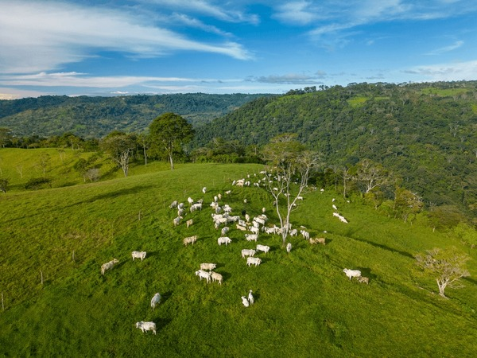

Produção integrada no Paraná: Exemplo de equilíbrio entre lavoura e preservação.
O Brasil é protagonista mundial na produção agropecuária, e a busca por um agro forte, com um futuro sustentável, é urgente e necessária. Esse equilíbrio entre alta produtividade e respeito ambiental não é apenas um ideal, mas uma estratégia vital para garantir a segurança alimentar, preservar recursos naturais e fortalecer a economia.
O que Você Precisa Saber
- Produção em Larga Escala: O agro forte não abre mão da produtividade, mas a potencializa com inteligência.
- Tecnologias de Ponta: Agricultura de precisão e ILPF são os motores da nova revolução verde.
- Políticas Públicas: Incentivos financeiros e crédito verde são fundamentais para a transição.
- Manejo de Solo: A conservação da terra garante a longevidade da produção paranaense.
Como o Agro Forte Contribui para um Futuro Sustentável
Agro forte, futuro sustentável, significa uma agricultura e pecuária que entregam alta produtividade mantendo o equilíbrio ambiental. Tecnicamente, o agro forte caracteriza-se pela capacidade de produzir alimentos, fibras e energia em grande escala, com eficiência e inovação tecnológica.
Na prática, um agro forte que promove sustentabilidade utiliza técnicas como rotação de culturas, controle biológico de pragas e manejo integrado de pastagens, reduzindo o uso de insumos químicos e recuperando áreas degradadas. Dados da Embrapa mostram que produtores que adotam essas práticas aumentam sua produtividade em até 20%.
Inovação Tecnológica e Sustentabilidade
A inovação tecnológica é a ponte para o equilíbrio. A agricultura de precisão, por exemplo, permite o uso racional de água e fertilizantes. Através de sensores, GPS e drones, o produtor aplica o insumo apenas onde a planta realmente necessita.
O equilíbrio entre produção e meio ambiente é o único caminho para a soberania alimentar do século XXI.
Sistemas Integrados: O Caso ILPF
O sistema de Integração Lavoura-Pecuária-Floresta (ILPF) é uma das maiores vitórias do agro brasileiro. Ele permite que em uma mesma área o produtor cultive grãos, crie gado e plante árvores. Isso otimiza o uso da terra, melhora o bem-estar animal e sequestra carbono da atmosfera.
Impacto da Sustentabilidade no Campo
Perguntas Frequentes (FAQ)
O que é Agricultura de Baixo Carbono?
São técnicas que visam reduzir a emissão de gases de efeito estufa no campo, como o plantio direto e a fixação biológica de nitrogênio.
Como o pequeno produtor pode ser sustentável?
Através da agroecologia e do apoio de cooperativas que fornecem tecnologia e assistência técnica de baixo custo.